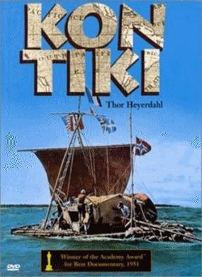

Hòn đảo nhỏ này không có người ở. Chúng tôi dần dần biết tường tận đảo này từ những khóm dừa nhỏ, đến tất cả bãi biển vì đường kính chỉ độ hai trăm mét. Điểm cao nhất ở đây cao không quá sáu pi-ê so với mặt đầm. Ở trên đầu chúng tôi là những ngọn dừa trĩu quả xanh mướt mà lần vỏ dày cùng sọ dừa bảo vệ nước dừa tươi mát khỏi bị nắng nhiệt đới làm hư hại. Trong những tuần đầu chả lo gì phải chết khát. Ngoài ra còn những quả dừa chín, bao nhiêu là cua và cá nên thực phẩm của chúng tôi khá dồi dào. Từ phía bắc, chúng tôi tìm thấy vết tích còn lại của một cây thập ác bằng gỗ thô chôn ngập một nửa xuống bãi cát san hô. Từ đây nhìn dọc theo dải đá là nơi bị đắm, chúng tôi đã bơi qua gần đó để đến chỗ trú hiện nay. Xa hơn một chút, vẫn ở phía bắc, qua đám sương mù màu xanh, chúng tôi trông thấy những ngọn cây dừa của một hòn đảo nhỏ khác. Hòn đảo ở về phía nam mà cây cối rậm rạp hơn, còn gần hơn hòn đảo này nhiều. Ở đó cũng không thấy gì biểu hiện có người, nhưng lúc này chúng tôi chưa quan tâm vì còn nhiều việc khác.
Hôm sau, khi mặt trời lên, chúng tôi thức dậy. Buồm bị trũng xuống và đầy nước mưa trong suốt như pha lê. Ben chịu trách nhiệm cất giữ số nước đó, rồi uể oải đi ra phía đầm nước để bắt cá trong những lạch cá, chuẩn bị cho bữa ăn sáng. Chúng tôi cũng phải nhanh chóng bắt liên lạc, vì hôm nay nếu Ra-rô-tông-ga không được tin về chiếc bè trước đêm nay, thì tin dữ về chúng tôi sẽ được đài này truyền đi. Cần phải bắt được liên lạc trước mười giờ tối nay, nếu không hạn ba mươi sáu giờ nữa sẽ hết và điện cáo viên nghiệp dư ở Ra-rô-tông-ga sẽ phát đi lời kêu gọi tổ chức các đoàn cấp cứu chúng tôi bằng máy bay. Buổi trưa đã qua, rồi buổi chiều lại qua nốt. Mặt trời bắt đầu lặn dần. Không rõ anh bạn ở Ra-rô-tông-ga có sốt ruột không! Bảy giờ, tám giờ, rồi chín giờ.
Đầu óc chúng tôi căng thẳng đến cực độ. Máy phát chưa có một tín hiệu nào, nhưng máy thu nhãn hiệu NC-173 bắt đầu có tiếng rít ở cuối thang sóng. Chúng tôi nghe thấy tiếng nhạc se sẽ, nhưng không phải ở làn sóng của anh bạn ở Ra-rô-tông-ga. Dần dần khu vực không có tiếng giảm dần, điều này chứng tỏ một bô-bin đã nóng và được sấy khô dần. Máy phát vẫn im bặt, không hoạt động. Giờ cuối cùng đã đến. Không thể để như thế này mãi được. Chúng tôi bỏ chiếc máy phát thường dùng và sử dụng chiếc máy nhỏ hơn, đã từng dùng trong thời kỳ hoạt động phá hoại trong chiến tranh. Cả ngày hôm nay, chúng tôi đã thử máy này nhưng không kết quả. Có thể bây giờ nó đã khô hơn tí nào chăng. Tất cả các nguồn điện đều hết. Chúng tôi phải lấy điện bằng chiếc máy phát điện quay tay. Thật vất vả cho bốn chúng tôi, không hiểu gì về vô tuyến điện, cứ thay nhau mà quay. Ba mươi sáu tiếng đồng hồ sắp qua. Tôi còn nhớ một bạn đứng bên tôi lẩm nhẩm: "Còn bảy phút... còn năm phút" sau đó không một ai dám nhìn vào đồng hồ nữa. Máy phát vẫn câm tịt như trước, nhưng máy thu trên một làn sóng nào đó lại có tín hiệu. Đột nhiên, nó bắt ngay được vào làn sóng vẫn liên lạc với Ra-rô-tông-ga và chúng tôi nhận định ngay nó đang hoạt động với trung tâm Ta-hi-ti. Một lúc sau chúng tôi nghe được một đoạn tin báo từ Ra-rô-tông-ga "... Không có máy bay ở mạn này của Xa-moa. Tôi tin chắc như vậy..."
Tiếng nói tắt hẳn.
Thần kinh chúng tôi căng không chịu nổi. Người ta định sắp đặt gì ở đó? Không hiểu những đoàn cấp cứu đã được phái đi chưa? Chắc chắn lúc này những tin tức liên quan đến chúng tôi đã được truyền đi khắp nơi. Hai điện báo viên làm việc cật lực, mồ hôi đẫm trên mặt, còn chúng tôi quay chiếc tay quay cũng nhễ nhại chẳng kém. Dần dần dây tời bắt đầu hoạt động. Sững sờ vì sung sướng, Toóc-xten chỉ vào kim chỉ dẫn đang bắt đầu dao động khi anh điều khiển tín hiệu "Moóc-xơ", máy đã bắt đầu hoạt động. Chúng tôi ra sức quay như điên trong khi Toóc-xten gọi Ra-rô-tông-ga. Họ không bắt được liên lạc với chúng tôi. Một lần nữa, lại gọi tiếp vẫn không thấy Ra-rô-tông-ga trả lời. Chúng tôi lại gọi đến Han và Phrăng ở Lốt Ang-giơ-lớt, trường hàng hải ở Li-ma, nhưng không một ai trả lời. Toóc-xten bèn phát đi một thông điệp chung cho tất cả các trạm trên thế giới có điều kiện bắt được tiếng nói của chúng tôi, trên làn sóng dành riêng cho nghiệp dư. Và như vậy không phải là không có kết quả. Từ không trung một tiếng nói yếu ớt đang chậm rãi gọi chúng tôi. Chúng tôi trả lời đã nghe thấy. Tiếng nói chậm rãi lại tiếp: "Tôi là Pôn ở Cô-lô-ra-đô. Tên anh là gì? Và anh ở đâu?".
Đó là một người chơi vô tuyến nghiệp dư. Chúng tôi vẫn quay còn Toóc-xten giữ nút máy và trả lời: "Đây là chiếc bè Công Ti-ki. Chúng tôi bị mắc cạn trên một đảo hoang ở Thái Bình Dương...".
Anh chàng Pôn nào đó không tin vào lời nói của chúng tôi. Anh tưởng rằng một anh bạn nghiệp dư nào đó ở phố bên cạnh định đùa, nên không liên lạc tiếp nữa. Chúng tôi bứt đầu bứt tai vì thất vọng. Chúng tôi đang ngồi đây, dưới những rặng dừa trong một đêm đầy sao trên một hòn đảo hoang vu, thế nhưng không một ai tin lời chúng tôi. Toóc-xten vẫn không nản lòng, vẫn ngồi xoay nút, liên tục nhắc đi nhắc lại: "Tất cả đều tốt, tất cả đều tốt...". Bằng giá nào cũng phải ngăn lại không để cho một hành trình cấp cứu lên đường băng qua Thái Bình Dương. Thế rồi chúng tôi lại nghe thấy rất yếu ở máy thu "Nếu tất cả đều tốt, tại sao anh cứ quấy rầy mãi thế?"
Không trung lại trở nên im lặng. Tất cả chỉ có thế. Trong niềm thất vọng, chúng tôi tưởng như có thể nhảy lên rung cho rụng tất cả các quả dừa. Nhưng đột nhiên thế nào mà Ra-rô-tông-ga và anh chàng tốt bụng Han lại nghe thấy chúng tôi. Han nói rằng anh đã khóc lên vì sung sướng khi thấy tín hiệu đài LI2B của chúng tôi. Nhưng đột nhiên liên lạc lại bị mất. Thế là một lần nữa chúng tôi lại trở nên trơ trọi trên hòn đảo của biển phía nam. Mệt mỏi, chúng tôi quay về nằm vật ra giường lót lá dừa. Trong vòng một tuần, chiếc Công Ti-ki đã kéo được đến giữa bãi đá, và nằm chết dí ở chỗ đất khô này. Những cây gỗ đã nghiến nát những tảng đá san hô khi chúng tôi kéo chiếc bè về phía đầm và bây giờ nó nằm lỳ không nhúc nhích. Chúng tôi hoài công thay nhau kéo, đẩy. Nếu chiếc bè đưa được đến đầm, chúng tôi có thể dựng cột buồm sửa sang lại và lại bơi đi qua đầm này tìm hiểu phía bên kia của đảo. Hòn đảo nhiều há vọng có người ở hiện đang ở phía tây dọc theo chân trời vì nơi đó kín gió. Ngày ngày trôi qua. Thế rồi một buổi sáng, hai, ba bạn chạy vội đến cáo cho tôi biết họ trông thấy một cánh buồm trắng ở đầm nước mặn.
Nhìn qua những thân cây dừa chúng tôi thấy một chấm nhỏ trắng nổi lên trên màu xanh mờ nước biển. Hẳn là cánh buồm gần đất liền ở phía bên kia. Chúng tôi thấy cánh buồm đi về phía này, theo sau còn một cánh buồm nữa. Trời càng sáng dần cánh buồm càng to, càng tiến lại gần và tiến thắng về phía chúng tôi. Chúng tôi kéo lá cờ Pháp trên ngọn cây dừa và vẫy cờ Na Uy chúng tôi trên một chiếc sào. Một cánh buồm đã tiến gần đến nỗi chúng tôi nhận ra đó là buồm của thuyền Pô-li-nê-di, trang bị theo kiểu mới nhất. Trên thuyền hai người da nâu đang nhìn chúng tôi. Chúng tôi vẫy, họ trả lời và tiếp tục lại gần. "Ia-ora-na!".
Chúng tôi chào họ bằng tiếng Pô-li-nê-di. Họ đồng thanh chào lại "Ia-ora-na!".
Một người nhảy ra khỏi thuyền độc mộc, kéo thuyền theo, lội qua chỗ nước nông đến với chúng tôi. Hai người này ăn mặc quần áo trắng nước da nâu, chân không, người chắc nịch, đầu che nắng bằng mũ rơm tự đan lấy. Họ lên bộ và đến với chúng tôi với vẻ hơi e dè, nhưng khi chúng tôi mỉm cười, bắt tay họ, họ nhìn chúng tôi với vẻ hớn hở, cười phô hàm răng trắng như ngà rất đều, và điều này còn đầy đủ hơn biết bao lời nói. Cách chào hỏi theo kiểu Pô-li-nê-di của chúng tôi làm họ ngạc nhiên và mạnh dạn, cũng như trước đây câu chào "Gút-nai" đã gây ấn tượng tốt đối với đồng bào họ ở đảo Ang-ga-tô. Họ nói ra một tràng tiếng Pô-li-nê-di cho đến khi biết rằng chúng tôi chẳng hiểu chút nào, họ lại im lặng cười thân mật, chỉ tay về phía chiếc thuyền sắp tới. Ba người nữa xuống thuyền. Khi đang lội bì bõm để lên bờ, họ đã chào chúng tôi, một người trong số họ có vẻ biết ít nhiều tiếng Pháp. Chúng tôi được biết một trong những hòn đảo ở phía bên kia đầm nước có một làng thổ dân. Những người dân Pô-li-nê-di ở đó, nhiều đêm trước đây đã trông thấy ánh lửa đêm của chúng tôi. Vì là con đường duy nhất từ đảo Ra-rôi-a đến vùng đảo bao quanh đầm nước đều phải qua làng nên không một ai có thể đi tới những đảo ở phía trong dải đá ngầm mà dân làng không trông thấy. Những già làng cho rằng ánh sáng trông thấy ở phía đông không phải là do người, mà là một cái gì đó huyền bí không thực. Ý kiến đó làm cho họ không dám có ý muốn đến tận nơi để xem.
Nhưng một mảnh gỗ hòm trên có sơn chữ đã trôi qua đầm nước đến đó. Hai thổ dân đã từng sống ở Ta-hi-ti võ vẽ đọc được thấy chữ Ti-ki kẻ đen trên miếng gỗ đó. Dân làng đều cho rằng trên dãy đá này có ma, vì tất cả họ đều biết rằng Ti-ki là ông tổ dòng giống họ đã qua đời từ lâu. Nhưng rồi lại thấy bánh bích quy, thuốc lá, ca cao và một hộp đựng chiếc giày cũ trôi đến thì họ biết ngay ở phía đông dải đá ngầm đã xảy ra đắm thuyền và người chỉ huy đã cử hai thuyền đến tìm những người sống sót, vì ban đêm họ đã nhìn thấy những ánh lửa. Trước sự nôn nóng của đồng đội, người thổ dân vừa nói chuyện với chúng tôi, hỏi tại sao lại có chữ Ti-ki trên các mảnh gỗ. Chúng tôi giải thích cho họ biết tất cả trang bị của chúng tôi đều được ghi tên này vì đó là tên chiếc bè đã chở chúng tôi. Những người bạn mới của chúng tôi ngạc nhiên và huyên náo hẳn lên khi biết rằng tất cả mọi thứ đều cứu được đúng lúc mắc cạn. Xác bè nằm chết dí nơi kia chính là chiếc bè đã dẫn chúng tôi đến đây. Họ muốn đưa tất cả chúng tôi lên thuyền dẫn ngay về làng. Chúng tôi cám ơn, từ chối vì phải ở đây cho đến khi nào chiếc Công Ti-ki được đưa ra khỏi dãy đá ngầm.
Tất cả họ đều sửng sốt nhìn những gì còn lại của chiếc bè và điều đó chắc chắn chúng tôi không thể nào hy vọng lại đưa xuống nước bộ khung bè gãy nát này được. Cuối cùng, người phát ngôn của thổ dân kiên quyết nói rằng chúng tôi phải theo họ về vì thủ lĩnh đã ra lệnh dứt khoát họ không thể về không. Chúng tôi quyết định cử một đại biểu đi với họ để gặp thủ lĩnh, sau đó trở về cho biết tình hình sinh hoạt ở hòn đảo đó. Chúng tôi không muốn bỏ lại chiếc bè và càng không thể bỏ tất cả trang bị.
Ben sẽ đi với họ.
Hai chiếc thuyền rời bãi biển theo chiều gió khuất dần về phía tây. Sáng hôm sau, chân trời đầy những cánh buồm trắng, tưởng như lần này dân đảo đem tất cả thuyền họ có, để tìm chúng tôi. Đoàn thuyền đi vào, chúng tôi trông thấy Ben trên chiếc thuyền đầu tiên, vẫy mũ, xung quanh rất nhiều dân đảo. Ben nói to với chúng tôi là thủ lĩnh của thổ dân cùng đi với anh. Chúng tôi xếp hàng nghiêm túc ở bãi biển trong khi họ đang lội vào.
Ben giới thiệu với chúng tôi người thủ lĩnh, ăn mặc rất trịnh trọng, ông ta cho biết tên là Tê-pi-u-ra-i-a-ri-i Tê-ri-i-pha-a-tô nhưng bảo chúng tôi gọi là Tê-ka. Chúng tôi đã gọi ông như vậy. Thủ lĩnh Tê-ka là người Pô-li-nê-di cao và mảnh với đôi mắt rất thông minh. Đây là một nhân vật quan trọng, một người dòng dõi hoàng tộc ở Ta-hi-ti và cũng trị vì cả những đảo Ra-rôi-a và những đảo của Ta-ku-me. Ông đã theo học trường ở Ta-hi-ti, có thể nói, đọc và viết được tiếng Pháp. Ông nói với tôi là thủ đô Na Uy gọi là Crít-chi-a-na và hỏi tôi có biết Bin Crôt-xbi. Ông còn cho biết trong mười năm gần đây chỉ có ba chiếc tàu nước ngoài ghé qua Ra-rôi-a, nhưng hàng năm làng đón tiếp nhiều lần một chiếc tàu nhỏ của dân địa phương ở Ta-hi-ti đến mua cùi dừa, mang hàng hóa đến và chở dừa đi. Mấy tuần nay dân làng đang chờ đón chiếc thuyền có thể sắp tới đó. Ben báo cáo tóm tắt: ở Ra-rôi-a không có một trường học nào, không có máy vô tuyến điện và cũng chẳng có một người da trắng nào. Dân làng sẽ dành cho chúng tôi mọi tiện nghi và chuẩn bị cuộc tiếp đón chúng tôi rất long trọng. Yêu cầu đầu tiên của người thủ lĩnh là được đi xem chiếc tàu đã đưa chúng tôi đến đây an toàn. Chúng tôi lội đến chỗ chiếc Công Ti-ki, các thổ dân đi thành hàng dài theo sau.
Gần tới chiếc Công Ti-ki, đột nhiên họ dừng cả lại, reo hò ầm ĩ, bàn tán xôn xao: "Đây không phải là một chiếc tàu. Đó là pae-pae!"
Họ lại đồng thanh kêu lên: "Pae-pae!", mặc cho nước bắn tung tóe, họ chạy qua bãi đá, trèo lên chiếc Công Ti-ki. Như những trẻ hiếu động, họ sục sạo khắp nơi, sờ mó các cây gỗ, tấm phên tre và các dây chằng. Thủ lĩnh của họ cũng năng nổ không kém. Ông quay lại với chúng tôi và nhắc lại với giọng chất vấn: "Ti-ki không phải là chiếc tàu. Nó là chiếc pae-pae".
Pae-pae là tiếng Pô-li-nê-di dùng để chỉ chiếc bè hoặc nền phẳng của mảng. Ở đảo Pa-cơ nó là loại thuyền của thổ dân. Người thủ lĩnh cho biết hiện nay không còn pae-pae như của chúng tôi, nhưng những già làng biết khá nhiều truyền thuyết về chiếc bè này. Những thổ dân cùng reo lên thích thú khâm phục các cây gỗ ban-xa, nhưng lại chê các loại dây thừng chằng. Họ cho rằng các loại dây này không chịu được nước biển và ánh nắng hàng tháng trời. Họ cho chúng tôi xem lại dây ở thuyền của họ, tết bằng những sợi dừa dùng đi biển năm năm mà không hề gì.
Khi chúng tôi trở lại hòn đảo nhỏ này, nó được đặt tên là Phê-nu-a Công Ti-ki, có nghĩa là hòn đảo của Công Ti-ki. Đó là tên mà tất cả chúng tôi phát âm rất dễ dàng, nhưng các bạn da nâu gọi tên chúng tôi theo đúng phát âm của Bắc âu rất vất vả khó khăn. Họ rất hài lòng khi tôi nói với họ là cứ gọi tên tôi là Tê-ra-i Ma-tê-a-ta tên mà ông thủ lĩnh ở Ta-hi-ti đã đặt cho tôi. Lần đầu tôi đặt chân đến, khi ông ấy "nhận tôi làm con nuôi".
Họ lấy từ trong thuyền ra để làm quà cho chúng tôi nào gà, nào trứng, nào mít. Một số người khác dùng xiên có ba mũi nhọn để lao bắt cá to trong đầm và tất cả mọi người đều dự một bữa tiệc quanh đống lửa trại.
Chúng tôi phải kể lại cho họ nghe những phiêu lưu, mạo hiểm đã trải qua trong cuộc hành trình trên chiếc bè, và họ cứ muốn chúng tôi nói đi nói lại về con cá mập voi. Mỗi khi chúng tôi kể đến đoạn mà E-rích đâm xiên vào sọ con cá khổng lồ đó, thì họ cũng hồi hộp kêu lên. Họ nhận ra ngay những con cá mà chúng tôi giơ cho họ xem những hình vẽ phác thảo, và họ gọi tên từng loại cá đó bằng tiếng Pô-li-nê-di. Nhưng chưa bao giờ họ trông thấy con cá mập voi và con Giem-pi-luýt và cũng chưa hề nghe nói về chúng. Tối đến, chúng tôi mở đài, tất cả mọi người say mê cùng nghe. Họ ưa thích nhạc nhà thờ cho đến khi đài đột nhiên chuyển sang nhạc phim Hu-la của Mỹ làm cho những người hăng hái sôi động bắt đầu ngọ nguậy, hai tay đưa cao quá đầu, kéo theo tất cả mọi người cùng nhảy điệu Hu-la Hu-la theo tiếng nhạc của đài. Đến đêm mọi người quây quần quanh ngọn lửa.
Thật là một sự tình cờ kỳ lạ với chúng tôi cũng như với dân địa phương. Sáng hôm sau, chúng tôi thức dậy, đã thấy họ đang rán cá vừa câu được và sáu quả dừa đã bổ ra cho chúng tôi giải khát. Hôm nay sóng đập vào dải đá ầm ầm hơn mọi khi. Gió thổi mạnh hơn làm cho các ngọn sóng bốc cao phía sau xác bè. Người thủ lĩnh chỉ vào chiếc bè nói rằng: "Chiếc Ti-ki ngày hôm nay sẽ đưa đến tận đây, thủy triều sẽ dâng lên rất lớn".
Đến mười một giờ, nước biển đã tràn vào đầm và ngập quanh đảo. Thủy triều thực sự đang dâng lên. Biển dâng cao, lấn dần dần qua các dải đá làm phần lớn chìm ngập dưới sóng biển. Hai bên đảo nước đã lấn tới, mang theo những tảng san hô lớn và những dải cát dài bị gió thổi bay như bột. Hết lớp bụi cát này lại đến lớp khác. Những cây tre ở bè bị long ra trôi lềnh bềnh trước mắt chúng tôi. Chiếc Công Ti-ki bắt đầu nhúc nhích. Tất cả các thứ trên bãi biển được chuyển vào trong đảo để tránh thủy triều. Dần dần chỉ còn trông thấy những mỏm cao nhất của dải đá. Bãi cát đã mất hẳn. Nước tràn vào tới bãi cỏ phẳng của đảo. Cảnh tượng làm cho chúng tôi rùng mình, có thể nói biển đang lấn dần chúng tôi. Trên mặt nước, chiếc Công Ti-ki đang quay cuồng cho đến khi vướng phải những tảng san hô. Dân địa phương nhảy xuống nước, hết lớp này đến lớp khác, vượt qua các xoáy nước, bơi ra chiếc bè. Nút và E-rích cũng bơi theo họ. Trên bè đã có sẵn các dây chằng. Lúc này bè đã trượt qua tảng san hô, trôi đi băng băng. Trên bè những thổ dân đang cố hết sức khống chế và điều khiển. Họ chưa hiểu được là chiếc Công Ti-ki rất khó điều khiển đưa về hướng tây nên họ đã bị cuốn theo nó một cách thảm hại cho đến khi nó giạt nhanh vào đầm. Khi vào trong đầm, nước lặng, chiếc bè như hơi bị lúng túng, đứng lặng yên như để giám sát chung quanh và thăm dò khả năng dành cho nó. Trước khi chiếc bè trôi đi theo hướng của đầm, các thổ dân đã kịp dùng dây buộc vào cây dừa, và chiếc Công Ti-ki đứng im, được buộc chặt.
Chiếc bè đã vượt qua biển cả, đất liền mở đường vượt qua mọi chướng ngại vật để vào trong đảo Ra-rôi-a. Trước tiếng reo hò khích lệ của những thổ dân như: Kê-kê hu-ru hu-ru" chúng tôi cùng hợp sức đẩy chiếc bè lên bãi cát của đảo mang tên Công Ti-ki. Nước triều đã dâng cao hơn mực nước trong những ngày biển động tới bốn pi-ê làm cho chúng tôi tưởng cả hòn đảo sẽ bị chìm ngập. Gió đã đẩy những vạt sóng hung hãn vào tới đầm. Chúng tôi chỉ chuyển được một số ít trang bị vào những chiếc thuyền nhỏ hẹp của thổ dân. Họ phải quay về làng ngay, Ben và Héc-man cùng đi theo họ vì ở làng có một đứa bé sắp chết vì nhiễm trùng ở đầu, và chúng tôi có thuốc kháng sinh pê-ni-xi-lin mang theo.
Sáng hôm sau, chúng tôi chỉ còn bốn người trên đảo Công Ti-ki. Gió đông thổi mạnh làm cho những người thổ dân không vượt được quá đầm nước đầy những mỏm san hô nhọn hoắt. Nước biển sau khi rút đi, giờ lại dâng lên dữ dội ngày càng mạnh và nhanh.
Ngày hôm sau, yên tĩnh đã trở lại. Bây giờ có thể lặn xuống dưới chiếc Công Ti-ki để xem xét các cây gỗ của bè. Nói chung, chúng còn tốt, dù san hô có cọ xát vào vài chỗ. Dây thừng chằng rất chắc, lằn sâu vào gỗ nên chỉ có bốn dây thừng đã bị san hô nghiến đứt. Chúng tôi dọn dẹp làm cho chiếc bè trông khá hơn trước. Ca-bin được tháo gỡ và dựng lại cột buồm.
Trong ngày hôm đó những cánh buồm lại xuất hiện ở phía chân trời và những thổ dân lại tìm chúng tôi. Héc-man và Ben cùng đến kể lại cho chúng tôi biết rằng dân làng đang chuẩn bị mở hội, và khi đến đó chúng tôi không được dời thuyền lên, trước khi có lệnh thủ lĩnh. Ngọn gió mát nhẹ đã nhanh chóng đưa chúng tôi vượt qua chiếc đầm rộng đến bảy dặm, nhìn lại những ngọn dừa đang đung đưa trước gió như vẫy chào chúng tôi, một nỗi buồn man mác khi phải tạm chia tay với những cây dừa và hòn đảo quen thuộc.
Trước mặt chúng tôi đang trải ra những hòn đảo lớn hơn, trên một trong những hòn đảo, chúng tôi trông thấy một cái đập đá san hô chìa ra biển, lấp ló sau những hàng dừa, những chiếc chòi đang tỏa khói. Làng có vẻ im lìm, không một bóng người. Họ đang chuẩn bị gì vậy? Đằng sau con đập bằng những tảng san hô, trên bãi biển hai bóng người đứng chơ vơ, một người cao, mảnh, một người thấp hơn nhưng đẫy đà, chắc nịch như một chiếc thùng ton nô.
Lên bờ, chúng tôi chào hai người. Đó là thủ lĩnh Tê-ka và phó thủ lĩnh Tu-pu-hoe. Tê-ka tỏ ra một con người thông minh sáng suốt, một nhà ngoại giao còn Tu-pu-hoe, hồn nhiên như một đứa trẻ ngây thơ, một người bạn tốt vui vẻ, tiềm tàng một sức mạnh tự nhiên và tính dí dỏm ít khi ta gặp. Thân hình khỏe mạnh vạm vỡ dáng bệ vệ, ông có dáng dấp một thủ lĩnh Pô-li-nê-di. Sự thực đúng như vậy, ông chính là chủ hòn đảo nhưng do Tê-ka nhờ biết nói, viết tiếng Pháp và biết tính toán giúp cho dân làng khỏi bị lừa khi thuyền buôn cùi dừa ở Ta-hi-ti đến, nên dần dần ông đã chiếm lĩnh vị trí tối cao này. Tê-ka cho biết chúng tôi cùng ông đi bộ đến nhà khách và khi mọi người đã lên bờ, chúng tôi sẽ cùng dự một ngày hội rước long trọng. Héc-man đi đầu, cầm cán lao trên có cờ bay phấp phới, rồi đến tôi đi cùng hai thủ lĩnh của đảo. Làng mang dấu vết rõ nét về quan hệ buôn bán cùi dừa với Ta-hi-ti, với những tấm ván và tôn uốn từ các thuyền buôn mang đến. Trong khi đó còn có một số lều làm theo kiểu cũ bằng cành cây và lá dừa tết lại hoặc bằng những tấm ván ghép vội vàng sơ sài bằng đinh trông giống như những ngôi biệt thự để nghỉ mát ở vùng nhiệt đới. Một ngôi nhà lớn cùng loại đứng tách riêng xa các cây dừa, là nơi hội họp của dân làng. Sáu người da trắng chúng tôi sẽ nghỉ tại đó.
Cùng với lá cờ, chúng tôi vào bằng một cửa nhỏ phía sau, rồi đi thẳng ra lan can ở phía trước. Trước mặt chúng tôi là nơi mà dân làng đủ mọi lứa tuổi già, trẻ, gái, trai tụ tập. Tất cả đều tỏ vẻ trang nghiêm, ngay đến các bạn đã quen biết ở đảo Công Ti-ki cũng lộ vẻ rất nghiêm túc. Họ không làm hiệu gì để tỏ ra đã quen chúng tôi. Khi chúng tôi đứng trên tiền sảnh, mọi người tham dự buổi họp cùng cất tiếng hát bài Quốc ca Pháp. Tê-ka thuộc lời làm nhiệm vụ dẫn bài và tất cả hát không đến nỗi tồi trừ một vài phụ nữ không hát được những nốt bổng. Dân làng chắc đã được huấn luyện và thực tập nhiều, nên mới có thể đạt kết quả như vậy. Hai lá cờ Pháp và Na Uy được kéo cao trên bực thềm kết thúc việc đón tiếp chính thức của thủ lĩnh Tê-ka, sau đó ông rút vào hậu trường. Bây giờ là vai trò của Tu-pu-hoe, ông tiến lên phía trước chủ trì buổi lễ. Ông ra hiệu, tất cả lại cất tiếng hát, lần này khá hơn vì âm điệu và lời ca là tiếng hát dân gian của họ. Âm điệu dù đơn giản nhưng hấp dẫn, mê li đến nỗi chúng tôi cảm thấy hơi rùng mình và thấy như Thái Bình Dương đang tiến đến trước chúng tôi. Vài người cất giọng hát và mọi người hát theo, theo nhịp đều. Nhạc cũng đa dạng tuy lời vẫn như vậy. Đại khái nội dung lời bài hát là:
"Xin chào Tê-ra-i và các bạn của ông, là những người đã vượt biển trên một chiếc pae-pae để đến với dân đảo Ra-rôi-a. Xin chào! Mong các bạn có thể ở lâu tại đây và chia sẻ với chúng tôi những kỷ niệm, sao cho chúng ta cùng mãi mãi bên nhau, dù cho các bạn sẽ trở về một đất nước xa xôi. Xin chào".
Chúng tôi phải yêu cầu họ hát lại lần nữa và khi họ cảm thấy bớt e ngại, thì không khí náo nhiệt hẳn lên. Sau đó Tu-pu-hoe đề nghị tôi nói vài lời với nội dung tại sao chúng tôi lại vượt biển trên chiếc pae-pae. Tất cả mọi người đều trông chờ có thế. Tôi nói bằng tiếng Pháp và Tê-ka dịch ra từng đoạn bằng tiếng địa phương. Đây là một buổi hội họp của những người da nâu, chưa được khai hóa nhưng thông minh tuyệt vời, đang chờ nghe tôi nói. Tôi kể cho họ nghe: trước đây tôi đã đi đến những đảo ở Thái Bình Dương, nơi có những đồng bào của họ, tôi đã được nghe nói đến vị thủ lĩnh đầu tiên của họ là Ti-ki. Ti-ki đã dẫn tổ tiên họ từ một xứ sở huyền bí nào đó, mà người ta, không rõ ở đâu, đến những hòn đảo này. Nhưng từ một mảnh đất xa xôi gọi là Pê-ru, xưa kia đã có một thủ lĩnh hùng mạnh tên là Ti-ki ngự trị. Nhân dân ở đó gọi ông ta là Công Ti-ki hay Ti-ki Mặt trời, vì ông ta tự nhận từ mặt trời mà ra. Ti-ki cùng một số đông những người thân tín cuối cùng đã rời đất nước đi mất trên những chiếc pae-pae lớn. Và sáu người chúng tôi cho rằng họ đã đến những hòn đảo này. Không một ai tin rằng một chiếc pae-pae lại có thể vượt qua một chặng đường như vậy, do đó chúng tôi đã từ Pê-ru ra đi trên chiếc pae-pae và đã đến đây. Điều đó chứng minh là người xưa có thể làm được.
Sau bài ngắn gọn của tôi được Tê-ka dịch ra cho mọi người nghe. Tu-pu-hoe mặt đỏ tía tai, cuồng nhiệt xông ra trước mọi người. Ông ta liến thoắng bằng tiếng Pô-li-nê-di, tay giơ lên làm điệu bộ, chỉ lên trời rồi chỉ vào chúng tôi. Trong lời nói của ông, chúng tôi nghe thấy nhắc đến nhiều lần tiếng Ti-ki. Ông nói nhanh không thể nào nghe kịp nhưng những thính giả lại chăm chú nghe như uống từng lời, thể hiện sự xúc động rõ rệt. Trái lại Tê-ka dịch ra lại có vẻ lúng túng. Tu-pu-hoe nói rằng từ đời cha, đời ông và trước nữa của ông ta, đã thấy nói đến Ti-ki, vị thủ lĩnh đầu tiên và được kể lại rằng Ti-ki hiện đang ở trên trời. Nhưng những người da trắng lại khẳng định rằng truyền thuyết về tổ tiên họ là chuyện hoang đường, chẳng có Ti-ki nào cả. Trên trời là nơi của Giê-hô-va thì họ bảo Ti-ki không có ở đó. Ti-ki là một thần không tôn giáo, không nên tin, thế mà chúng tôi đây, lại đến với họ vượt qua biển cả trên một chiếc pae-pae. Chúng tôi là những người da trắng đầu tiên xác nhận tổ tiên của họ, đã nói sự thực, Ti-ki đã sống và Ti-ki là có thực nhưng ngày nay Ti-ki đã mất và ở trên trời. Với ý nghĩ hoảng sợ làm hỏng công tác tuyên truyền, tôi vội vàng giải thích rằng Ti-ki chắc chắn là có thực và giờ đây ông ta đã chết. Nhưng chỉ có Giê-hô-va biết Ti-ki hiện nay đang ở trên trời hay địa ngục, vì Giê-hô-va là Thượng đế mà Ti-ki chỉ là một người chết bình thường, một vị đại thủ lĩnh như Tê-ka và Tu-pu-hoe hay hơn chút nữa. Sự giải thích này đã làm lại cho mọi người vui vẻ, hài lòng những cái gật đầu và sự rì rầm của họ chứng tỏ sự giải thích của tôi rất đúng. Điều chủ yếu là Ti-ki đã sống. Dù hiện nay Ti-ki có phải ở địa ngục thì cũng không sao đối với mọi người, trừ ông ta. Tu-pu-hoe lại còn gợi ý nếu thật là như vậy thì lại càng có dịp gặp lại Ti-ki. Ba ông già từ đám đông ra muốn bắt tay chúng tôi. Rõ ràng chính các cụ già này là những người còn nhớ những kỷ niệm về Ti-ki. Vị thủ lĩnh cho chúng tôi biết rằng một trong các cụ này nhớ rất nhiều truyền thuyết và thơ ca lịch sử thời kỳ các cụ tổ các cụ. Tôi hỏi ông cụ đó rằng trong các truyền thuyết có điều gì nói ám chỉ về Ti-ki từ hướng nào đến. Không có cụ nào nghe thấy nói đến điều này. Nhưng sau một lúc suy ngẫm thận trọng, cụ già nhất nói rằng Ti-ki có người bà con họ hàng gần, tên là Ma-uy và trong thơ ca về Ma-uy người ta kể lại rằng vị anh hùng này từ Pu-ra đến. Pu-ra là từ chỉ nơi mặt trời mọc.
Cụ già nói tiếp, nếu Ma-uy từ Pu-ra đến thì chắc chắn Ti-ki cũng ở đó mà đến. Và sáu người chúng tôi cũng đi bằng chiếc pae-pae và cũng đã đến đây. Điều đó là hiển nhiên. Tôi kể cho họ nghe trên một hòn đảo chơ vơ, gọi là đảo Man-ga-ra-va, rất gần đảo Pa-cơ, dân đảo ở đó chưa bao giờ dùng thuyền độc mộc và hiện nay họ vẫn dùng những chiếc pae-pae lớn. Các cụ già không biết chuyện này nhưng họ cho biết các cụ tổ xưa kia cũng dùng những chiếc bè lớn và dần dần không dùng đến nữa, chỉ còn nghe thấy nói đến tên và những truyền thuyết. Cụ già nhất lại nói tiếp, trong thời kỳ xa xưa nhất, người ta gọi là Rông-gô Rông-gô, từ này không còn dùng trong ngôn ngữ hiện nay nhưng trong những truyện tục truyền thật cổ vẫn còn nói đến. Ở một số đảo từ Rông-gô được gọi là Lô-nô. Cái tên gọi đó làm cho tôi thú vị, vì đó là tên của một ông tổ lâu đời được mọi người Pô-li-nê-di biết đến, được mô tả có nước da sáng và bộ tóc hung.
Lần đầu tiên khi đại úy Cúc đến Ha-oai, ông ta được đón tiếp niềm nở vì những thổ dân ở đây tưởng ông là ruột thịt với người da trắng Rông-gô vắng mặt, sau bao nhiêu thế hệ đã từ xứ sở của tổ tiên, họ trở về trên một thuyền buồm lớn. Với những thổ dân ở đảo Pa-cơ, từ Rông-gô Rông-gô chỉ những chữ tượng hình huyền bí mà những người tai dài cuối cùng đã chôn vùi cả bí mật, vì họ biết viết. Các cụ già còn muốn tranh luận về vấn đề Ti-ki và Rông-gô Rông-gô, nhưng các thổ dân trẻ lại muốn nghe nói chuyện về cá mập voi và cuộc hành trình qua đại dương. Bữa ăn đang đợi chúng tôi và Tê-ka cũng đã mệt vì phải phiên dịch. Tất cả làng đều được phép đến bắt tay với từng người chúng tôi. Những đàn ông siết chặt tay chúng tôi tưởng gãy, miệng lẩm bẩm “Ia-ô-ra-na”, các cô gái uốn éo chào bẽn lẽn và kiêu kỳ, còn các bà già nói luôn mồm, chỉ tay vào bộ râu và màu da của chúng tôi. Sự hào hiệp thể hiện rõ trên từng nét mặt, nên sự bất đồng ngôn ngữ không còn là điều quan trọng. Các bạn nói với chúng tôi bằng tiếng Pô-li-nê-di, chúng tôi trả lời liền liền bằng tiếng Na Uy làm cho hai bên đều thích thú. Từ đầu tiên của thổ ngữ chúng tôi học là từ "thích". Thêm vào đó là khi ta chỉ vào cái gì mà mình "thích" chắc chắn ta được ngay.
Thật là đơn giản. Nếu nhăn mũi mà nói "thích" tức là "không thích". Và cứ trên cơ sở ấy chúng tôi thu xếp công việc khá tốt. Khi chúng tôi đã làm quen với một trăm hai mươi bảy người dân làng, một chiếc bàn dài được kê ra cho hai thủ lĩnh và sáu chúng tôi. Tiếp theo những cô gái trẻ bưng ra những món ăn tuyệt nhất. Một số cô kê dọn bàn, một số đem choàng vào cổ chúng tôi những vòng hoa hoặc đặt những vòng hoa nhỏ lên đầu. Hoa tỏa ra mùi thơm ngào ngạt, mát dịu. Ngày hội chào đón chúng tôi bắt đầu như vậy và kéo dài đến mấy tuần sau cho đến khi chúng tôi ra đi. Chúng tôi đã mở tròn mắt, nước bọt ứa ra trước những món ăn bày trên bàn, nào là gà, vịt, lợn sữa quay, tôm hùm tươi, những món cá nấu theo kiểu Pô-li-nê-di, mứt, đu đủ và nước dừa. Trong khi chúng tôi ăn, dân làng ca hát và những cô gái trẻ nhảy múa quanh bàn. Sáu chúng tôi được một bữa ăn thoải mái, thưởng thức những món ăn ngon lành, ngấu nghiến như người đói ăn. Hai vị thủ lĩnh rất vui vẻ, ăn uống thực thà như chúng tôi.
Sau bữa ăn, dân làng muốn trình diễn với quy mô lớn những điệu vũ dân gian cho chúng tôi thưởng thức. Họ mang ghế cho chúng tôi và hai thủ lĩnh, trong khi đó hai người cầm ghi-ta bắt đầu dạo những bản nhạc Pô-li-nê-di. Hai hàng nam nữ mặc váy bằng sợi dừa, người uốn éo nhẹ nhàng tiến ra giữa đám đông, những người vừa xem vừa hát, ngồi quây tròn dưới đất.
Một cô gái, dáng mập mạp, một cánh tay bị cá mập cắn đứt, vẻ hào hứng cất cao giọng, dẫn lời bài hát cho cả tập thể. Lúc đầu những người múa còn thiếu bình tĩnh và nặng nề về phô diễn điệu bộ, sau thấy chúng tôi, những người da trắng tỏ vẻ tán thưởng những điệu vũ cổ truyền, họ múa nhanh dần lên. Một vài người già cũng theo họ nhảy múa với nhịp điệu đẹp mắt, với điệu vũ mới lạ. Khi mặt trời tắt hẳn, nhịp độ múa lại càng tăng lên với sự cổ vũ hăng say của người xem. Họ quên hẳn sự có mặt của chúng tôi, coi chúng tôi là đồng bào và cũng chia vui như họ. Các tiết mục vẫn tiếp tục. Hết cô gái này biểu diễn lại đến cô gái khác. Sau cùng, một đám thanh niên ngồi xổm thành vòng tròn nhỏ trước mặt chúng tôi, theo hiệu lệnh của Tu-pu-hoe, họ dùng lòng bàn tay đập nhịp xuống đất. Lúc đầu còn chậm, sau nhanh dần. Một người gõ trống phụ họa theo. Với hai chiếc dùi, họ gõ rất nhanh trên miếng gỗ rỗng, khô cứng như xương, phát ra những tiếng dồn dập giòn giã. Khi nhịp điệu đến chừng mực nào đó, tiếng hát bắt đầu cất lên. Một cô gái trẻ quàng dây hoa, bông hoa giắt ở tai, đột nhiên nhảy vào vòng tròn. Chân đi đất, hai đầu gối khuỵu xuống, cô gái đảo người đung đưa thân dưới theo nhịp đàn, hai cánh tay cong, vòng trên đầu, phong điệu hoàn toàn Pô-li-nê-di. Cô gái nhảy rất tuyệt, lôi cuốn mọi người cùng đập tay xuống đất đánh nhịp. Một cô gái nữa nhảy vào vòng, tiếp theo lại một cô thứ cùng với những âm điệu tuyệt vời. Các cô lướt nhẹ quanh nhau ba. Các cô gái nhảy dẻo không thể tưởng, như những bóng kiều diễm.
Tiếng vỗ tay xuống đất rầm rập, tiếng hát, tiếng trống gõ dẫn dắt, làm tăng tốc độ nhịp điệu càng nhanh hơn, cuốn theo điệu múa càng điên loạn cuồng nhiệt. Trong khi đó người xem hò hét, tay đập xuống đất thành một nhịp điệu hòa hợp tuyệt vời. Đó là cuộc sống ở Thái Bình Dương đã có từ hồi xưa. Trên trời sao lấp lánh, những ngọn dừa đung đưa trước gió. Một đêm dài, êm dịu, không khí tỏa ngát mùi hoa và tiếng dế kêu rỉ rả. Tu-pu-hoe vẻ hân hoan vỗ vai tôi: "Mai tai?". Tôi đáp: "Vâng! Mai tai". Ông lại hỏi người khác câu đó và mọi người đều đáp lại ông "mai tai". Ông gật đầu tỏ vẻ hài lòng nhắc lại câu "mai tai" và trỏ vào mình. Niềm vui của ông cũng là của chúng tôi. Tê-ka thấy đêm vui thành công, nói rằng đây là lần đầu tiên người da trắng dự buổi biểu diễn múa ở Ra-rôi-a. Tiếng trống, tiếng đập tay, tiếng hát và điệu nhảy lại càng dồn dập, nhanh hơn. Sau cùng một cô gái ngừng nhảy, đứng tại chỗ, thân trên cử động theo một nhịp điệu rất nhanh, hai cánh tay duỗi thẳng hướng về Héc-man. Anh cười ngượng nghịu sau chòm râu, lúng túng không hiểu ý. Tôi nói nhỏ với Héc-man "Vào đi! Cậu nhảy giỏi lắm cơ mà".
Đám đông reo hò cổ vũ, Héc-man nhảy vào vòng và cũng khom người bắt chước những động tác uốn éo, đung đưa của điệu múa Hu-la. Cặp nhảy trông thật xứng đôi. Tiếp theo đến Ben và Toóc-xten cũng nhảy vào, đem hết nhiệt tình say sưa nhảy múa, mồ hôi ròng ròng trên mặt mà cũng không theo kịp được nhịp điệu ngày càng tăng. Cho đến lúc chỉ có tiếng trống gõ dồn thành một tràng âm thanh liên tiếp kéo dài, tức là ba cô gái theo nhịp trống, người rung lên như chiếc lá bạch dương từ từ nhẹ nhàng nằm xuống đất, và tiếng trống cũng ngừng hẳn. Đêm vui dành cho chúng tôi thật phấn khởi không sao kể xiết.
Tiết mục tiếp là "Múa chim", một trong những lễ cổ xưa nhất của Ra-rôi-a. Nam và nữ đứng thành hai hàng bắt chước điệu nhảy của những bầy chim, dưới sự điều khiển của một người chỉ huy, mang tên là "người thủ lĩnh của đàn chim". Người này trình bày một số động tác kỳ lạ nhưng không tham gia cùng các diễn viên. Khi tiết mục kết thúc, Tu-pu-hoe giải thích với tôi là tiết mục này là để chào mừng chiếc bè và người ta sắp biểu diễn lại một lần nữa. Nhưng lần này, chính bản thân tôi sẽ là người dẫn đầu vì công việc của người này chỉ là gào và nhảy cẫng xoắn lưng, tay để trên đầu để múa. Tôi đặt vòng hoa trên đầu lại cho chặt và kéo xuống trán rồi bước vào tham gia với họ. Trong khi tôi cúi xuống để nhảy, tôi thấy ông già Tu-pu-hoe cười lăn ra và nhạc cũng yếu dần, thì ra các nhạc công và diễn viên cũng đang lăn ra cười rũ rượi như ông già. Riêng có E-rích là ngồi yên. Anh bị cảm và khí hậu ẩm ướt làm cho lưng anh lại đau, trông như một đại úy tàu buồm già, người ngay đơ râu xồm xoàm, chiếc tẩu phì phèo luôn ở miệng. Các cô gái trẻ cũng không làm cho anh xúc động. Anh mặc một chiếc quần đùi bằng da cừu, ngồi dưới gốc dừa với bộ râu rậm mình trần, trông chẳng khác gì Rô-bin-xơn Cơ-ru-xô. Hết cô gái này đến cô gái khác đến mời anh nhảy, đều vô ích. Anh vẫn ngồi yên, trên đầu một vòng hoa đội lên đám tóc rối bù, ra sức phì phèo với chiếc tẩu.
Một phụ nữ vóc người nở nang vào vòng nhảy bước mấy nhịp vũ duyên dáng, quyết định tiến đến E-rích, anh hơi hoảng nhưng người phụ nữ đã mỉm cười với anh, tiến đến dứt khoát nắm tay và nhấc anh ra khỏi ghế đẩu. Không sao nhịn được cười. Chiếc quần đùi của E-rích mặc phía lông cừu vào trong và mặt da phía ngoài, phía sau có một lỗ thủng và một sợi len trắng thò ra trông như chiếc đuôi thỏ. E-rích miễn cưỡng theo người phụ nữ vào vòng nhảy. Chân tập tễnh, một tay cầm tẩu còn một tay ôm lấy chỗ lưng đau. Mỗi khi anh định nhảy, một tay lại phải rời quần để giữ vòng hoa trên đầu khỏi rơi. Cuối cùng vòng hoa rơi mất, anh lại dùng tay giữ quần. Chiếc quần bằng da nặng, tụt xuống đến tận mắt cá chân. Tất cả mọi người trong vòng đều không nhảy được nữa, họ lăn ra cười chảy cả nước mắt. Tiếng cười vang động cả rừng dừa mà E-rích và người phụ nữ to béo kia vẫn cứ bước những nhịp điệu duyên dáng. Cuối cùng hai người cũng ngừng vì những người hát và chơi nhạc không thể nào tiếp tục được vì cười tức bụng. Cuộc vui kéo dài cho đến sáng bạch. Chúng tôi được nghỉ một lúc sau khi lại một lần nữa bắt tay với một trăm hai mươi bảy người. Cuộc vui như vậy, ngày nào cũng tiếp diễn, sáng và chiều, trong mấy tuần tôi ở đây. Tìm khắp cả các chòi trong làng, thổ dân mới thu xếp cho chúng tôi được sáu chiếc giường xếp cạnh nhau dọc theo tường của gian nhà họp. Chúng tôi nằm ngủ thành một hàng chẳng khác gì trong truyện thần thoại "Nàng Bạch Tuyết và bảy chú lùn" với những vòng hoa thơm treo trên đầu.
Sáng hôm sau, chú bé bị nhọt viêm tấy ở đầu đang trong tình trạng nguy hiểm. Sốt 40o, chỗ sưng to bằng nắm tay, nhịp tim đập rất yếu. Tê-ka cho biết rằng trong làng đã có nhiều trẻ chết như vậy. Nếu chúng tôi không có cách nào cứu chữa, đứa bé không còn sống được bao lâu nữa. Chúng tôi có thuốc kháng sinh nhưng không biết cho đứa bé dùng liều lượng như thế nào. Nếu đứa trẻ chết trong khi chúng tôi điều trị, thật là điều không may cho chúng tôi.
Nút và Toóc-xten đem máy phát vô tuyến điện và gửi ngay điện. Đến chiều, chúng tôi bắt liên lạc với những người bạn không biết mặt là Han và Phrăng đang ở Lốt Ang-giơ-lớt. Phrăng gọi điện cho một bác sĩ. Qua điện đài chúng tôi thông cáo các triệu chứng và những thuốc mà chúng tôi hiện có. Phrăng báo lại cho chúng tôi ý kiến của bác sĩ, và đêm đó chúng tôi túc trực bên chú bé Hau-ma-ta nằm sốt mê man cùng với dân làng khóc lóc ầm ĩ xung quanh.
Héc-man và Nút trông nom săn sóc chú bé, còn chúng tôi mời tất cả dân làng ra ngoài. Khi chúng tôi cầm con dao nhọn dội nước sôi, bà mẹ gần như ngất đi. Đầu chú bé được cạo trọc lộ rõ chỗ sưng tấy. Mủ bắn vọt lên cao. Nhiều thổ dân vẻ giận dữ phá cửa vào, lại phải đuổi họ ra. Chẳng có gì ghê gớm lắm. Nặn hết mủ ra, rửa sạch bằng thuốc sát trùng, những "bác sĩ bất đắc dĩ" băng đầu và tiếp tục điều trị bằng kháng sinh. Suốt hai ngày, hai đêm liền, cứ bốn tiếng đồng hồ đứa bé lại được chúng tôi khám. Sốt vẫn cao, vết thương vẫn chưa liền. Tối nào vị bác sĩ ở Lốt Ang-giơ-lớt cũng được chúng tôi hỏi đến. Đột nhiên chú bé giảm sốt, vết thương đã se miệng, chờ thành sẹo. Một tuần sau, chú bé Hau-ma-ta đã chơi ngoài bãi biển cùng với các bạn nhỏ, đầu còn quấn băng và chỉ ít ngày sau có thể tháo băng. Việc làm có kết quả này làm dân làng đến xin chữa bệnh. Đau răng, đau dạ dày nhiều nhất. Già, trẻ người nào cũng mụn nhọt, chỗ này hay chỗ khác trên người. Chúng tôi giới thiệu bệnh nhân đến bác sĩ Nút và Héc-man. Bệnh nhân có người khỏi, có người lại ốm thêm. Thuốc hết, chúng tôi cho những bệnh nhân nữ đau thần kinh dùng cháo với sô-cô-la cũng đem lại hiệu quả tốt.
Chúng tôi sống cùng những thổ dân mến khách đã bao nhiêu lâu, giờ đây lại thấy chuẩn bị cho một ngày lễ long trọng nhất. Buổi lễ công nhận chúng tôi là công dân Ra-rôi-a và mỗi người sẽ được đặt tên bằng tiếng Pô-li-nê-di. Riêng phần tôi không còn tên là Tê-ra-i Ma-tê-a-ta như trước đây ở Ta-hi-ti người ta đã gọi tôi, còn ở đây chắc lại có một tên khác.
Sáu ghế đẩu được đặt ở giữa quảng trường. Tất cả dân làng đều dậy sớm để chọn chỗ tốt trong khu vực người xem. Tê-ka ngồi trang nghiêm lẫn với dân làng. Tê-ka là thủ lĩnh nhưng buổi lễ này là một nghi thức cổ truyền của địa phương nên Tu-pu-hoe chủ trì buổi lễ. Chúng tôi chờ đợi trong không khí im lặng, trang nghiêm. Tu-pu-hoe tay chống chiếc gậy chậm rãi trịnh trọng tiến lại. Ông ý thức được giờ phút trang trọng này. Mọi con mắt dồn vào ông đang chìm trong suy tư. ông ngồi trước mặt chúng tôi, thật đúng là một người sinh ra để làm thủ lĩnh, nhà hùng biện và diễn viên xuất sắc. Quay về phía những người hát chính, người chơi trống và những người múa chính, ông giơ chiếc gậy lần lượt chỉ định họ, bằng giọng ôn hòa ông ra những lệnh ngắn gọn. Ông quay về phía chúng tôi, đôi mắt chợt mở to, long lanh trên khuôn mặt nâu sạm đầy cởi mở. Giơ chiếc gậy lên, ông nói một hơi, đại ý để lại những nghi thức cổ truyền mà chỉ người già nhất mới biết được, vì ông dùng toàn thổ ngữ mà nay người ta đã lãng quên. Tê-ka nói lại cho chúng tôi nghe rằng Ti-ca-roa là tên vị vua đầu tiên dựng lên ở đảo, vị trí ở ngay hòn đảo này, từ bắc đến nam, từ đông sang tây và ngay cả bầu trời ở trên đầu chúng tôi. Trong khi đó, mọi người đồng ca hát những bài ca ngợi vua Ti-ca-roa. Tu-pu-hoe đặt bàn tay lên ngực tôi, quay về dân làng tuyên bố đặt tên cho tôi là Va-roa Ti-ca-roa tức là Lý trí của Ti-ca-roa. Tiếng hát ngừng lại, đến lượt Héc-man và Ben. ông cũng đặt tay lên ngực hai anh, đặt cho hai người hai tên vị anh hùng của quá khứ đã chiến đấu và giết được con thủy quái ở ngay cửa ngõ hòn đảo.
Một hồi trống giòn giã nổi lên. Hai người đàn ông bụng quấn vải, một chiếc lao dài cầm tay, nhảy ra phía trước ngọn lao chĩa lên trời, chân bước mau, đầu gối lên ngang ngực, đầu quay hết bên này sang bên kia. Một hồi trống khác lại nổi lên, họ nhảy lên cao với nhịp điệu hoàn hảo, họ giao chiến tượng trưng theo điệu bộ sân khấu. Cuộc biểu diễn ngắn và nhanh diễn lại cuộc chiến đấu của những vị anh hùng với thủy quái. Tiếp theo, lời ca lại vang lên cho nghi lễ trang trọng, Toóc-xten được gọi là Mô-rô-a-ke, tên một vua xưa kia của làng hiện nay. E-rích và Nút nhận tên là Tê-nê Ma-ta-rô và Tê-phô-nu, tên hai nhà hàng hải của quá khứ. Cuộc lễ chấm dứt. Hai hàng nam nữ mặc váy bằng rơm tết cùng những vòng hoa rủ xuống, vừa đi vừa múa tiến lại phía chúng tôi, chuyển những vòng hoa trên đầu họ sang đầu chúng tôi. Họ mặc cho chúng tôi những váy bằng tơ dừa và cuộc vui lại tiếp tục.
Một đêm, chúng tôi liên lạc với nhà vô tuyến điện nghiệp dư ở Ra-rô-tông-ga, người này chuyển cho chúng tôi một thông báo của Ta-hi-ti. Đó là lời chào mừng thân thiết của viên Toàn quyền các thuộc địa Pháp ở Pô-li-nê-di. Theo chỉ thị của Pa-ri, viên toàn quyền sẽ phái một thuyền buồm tên là Ta-ma-ra đến đón chúng tôi đi Ta-hi-ti để khỏi phải chờ thuyền buôn cùi dừa. Ta-hi-ti là trung tâm các thuộc địa của Pháp và là hòn đảo duy nhất có quan hệ với thế giới nói chung. Ở Ta-hi-ti, chúng tôi sẽ đáp tàu thường lệ để trở về Tổ quốc. Những cuộc vui liên hoan vẫn tiếp tục ở Ra-rôi-a.
Một đêm, chúng tôi nghe thấy tiếng kêu lạ lùng từ biển vọng tới. Những người canh gác từ ngọn cây dừa xuống báo cho biết có một chiếc tàu thả neo ở cửa đầm. Chúng tôi vội chạy ra nhìn thấy ánh sáng của chiếc tàu đúng ngay ở cửa đầm. Dưới ánh sao đêm, chúng tôi nhận thấy đường viền con tàu, mạn rất rộng có hai cột buồm, không biết có phải con tàu mà vị toàn quyền phái đến không? Mà tại sao nó lại không vào? Những thổ dân tỏ ra lo lắng. Cuối cùng chúng tôi thấy rõ nguyên nhân. Chiếc tàu bị nghiêng và suýt nữa bị lật nhào và bị mắc cạn trên một dải san hô ngầm.
Toóc-xten dùng ký hiệu đèn hỏi "Tàu nào?".
Tín hiệu trả lời "Tàu Mao-a-ê".
Mao-a-ê là tàu buôn cùi dừa ở các đảo, đến Ra-rôi-a để mua cùi dừa. Thuyền trưởng và nhân viên tàu đều là dân Pô-li-nê-di rất thuộc luồng lạch vào đảo nhưng do đêm tối, luồng nước đã phản lại, cũng may chiếc tàu được đảo che khuất và thời tiết thuận lợi. Chiếc Mao-a-ê ngày càng nghiêng nên đoàn thủy thủ trên tàu phải thả xuồng. Để chiếc tàu khỏi lật nhào, người ta dùng dây thừng to buộc vào cột buồm một đầu dây mang vào tận đất liền, được các thổ dân buộc chặt vào những cây dừa. Họ còn dùng dây neo ở ngay cửa đảo, hy vọng kéo chiếc Mao-a-ê khi nước triều tràn vào đầm. Dân làng mang hết thuyền ra cứu chiếc tàu buôn. Trên tàu có chín mươi chín tấn cùi dừa đựng trong các bao được dân chuyển hết vào đảo. Nước triều dâng cao, tàu Mao-a-ê vẫn bị mắc cạn nằm trên dải san hô. Nước đã tràn vào. Sáng hôm sau, nó lại càng tồi tệ hơn. Đoàn thủy thủ đành bó tay vì không thể dùng xuồng và thuyền để kéo cả một trọng lượng một trăm năm mươi tấn ra khỏi dải san hô ngầm. Nếu tiếp tục va vào san hô chiếc tàu sẽ tan ra từng mảnh. Thời tiết thay đổi, sóng trào sẽ nhồi nó vào bãi san hô. Tàu Mao-a-ê không có máy phát vô tuyến điện, chúng tôi lại có máy. Trước khi chờ tàu cứu từ Ta-hi-ti đến thì chiếc Mao-a-ê đã bị chìm nghỉm.
Trưa ngày hôm sau đó tàu Ta-ma-ra xuất hiện ở chân trời phía tây. Đoàn thủy thủ tàu đó không khỏi ngạc nhiên ngoài chiếc bè ra lại có cả chiếc tàu buồm nằm lăn lóc trên dải đá ngầm. Trên chiếc Ta-ma-ra có viên chánh sứ người Pháp cai trị khu vực Tu-a-mô-tu và Tu-bu-ai tên là Phrê-đê-rích An-nơ do viên toàn quyền phái đi gặp chúng tôi. Ngoài ra còn có một nhà điện ảnh, một điện báo viên, còn thuyền trưởng và thủy thủ đều là người Pô-li-nê-di.
An-nơ sinh ra ở Ta-hi-ti, cha mẹ đều là người Pháp. Ông ta là tay đi biển giỏi. Được sự thỏa thuận của thuyền trưởng, đang mong trút trách nhiệm trong vùng nước nguy hiểm, An-nơ chỉ huy chiếc Ta-ma-ra. Trong khi chiếc Ta-ma-ra phải tránh hàng dãy xoáy nước và bao nhiêu dải đá ngầm, người ta đang cố sức kéo chiếc tàu buôn, An-nơ đang cố gắng khéo léo điều khiển trong tình trạng đầy hiểm nguy mà nước triều có thể đưa cả hai con tàu vào dải san hô. Ra đến biển khơi, chiếc Mao-a-ê thoát khỏi dải đá, tàu Ta-ma-ra kéo ra chỗ nước sâu. Nhưng chiếc Mao-a-ê nước ngập quá nhiều qua các lỗ thủng ở vỏ tàu, nên phải kéo đi hết sức nhanh đến vùng nước cạn ở đầm. Suốt ba hôm, các bơm hoạt động ngày đêm mà chiếc Mao-a-ê vẫn sắp bị chìm nghỉm. Những thổ dân chuyên mò hạt trai lặn xuống mang theo những tấm chì và đinh để hàn gắn các lỗ thủng nặng và chiếc Mao-a-ê có thể cố kéo về cảng Ta-hi-ti cùng chiếc Ta-ma-ra đi kèm có bơm hoạt động liên tục. An-nơ điều khiển tàu Ta-ma-ra vào vùng nước nông ở đầm rồi lại ra đảo Công Ti-ki kéo nốt chiếc bè của chúng tôi.
Phút vĩnh biệt đảo Ra-rôi-a thật lưu luyến. Tất cả mọi người kéo ra mặt đập đàn hát những bài mà chúng tôi ưa thích, khi chiếc xuồng đến đón chúng tôi ra tàu. Vóc người vạm vỡ của Tu-pu-hoe, tay bế chú bé Hau-ma-ta nổi lên giữa đám đông. Hau-ma-ta khóc nức nở, những giọt nước mắt chảy cả sang má vị thủ lĩnh đầy nghị lực. Mọi người tiễn chúng tôi đều khóc, nhưng họ vẫn tiếp tục đàn hát khá lâu, lâu lắm, cho đến khi tiếng sóng vỗ bờ làm át đi, chúng tôi không còn nghe thấy gì nữa.
Những tâm hồn trung thực đó phải xa những người bạn của họ. Còn chúng tôi, tất cả đứng im lặng bên lan can con tàu nhìn lại cho đến khi con đập bị rặng dừa che khuất, và rồi cả rặng dừa cũng biến đi sau biển cả, mang theo một trăm hai mươi bảy người bạn quý. Bên tai chúng tôi còn như văng vẳng lời ca: "Hãy cùng chúng tôi chia sẻ bao kỷ niệm, miễn rằng chúng ta luôn ở bên nhau dù cho bạn phải đi đến một nơi nào xa xôi. Chào bạn..."
Bốn ngày sau, đã nhìn thấy Ta-hi-ti. Đâu phải là một chuỗi hạt ngọc cùng với những khóm dừa. Chỉ thấy những núi nhấp nhô trên nền trời, mỏm núi phủ đầy mây. Càng đến gần, những trái núi xám xịt phô ra những triền màu xanh ngắt. Những màu xanh đủ vẻ chồng chéo nhau. Những cây cối sum sê của miền nam phủ kín từ trên cao đến những bờ đá xám ngắt đi theo các vực sâu đến các thung lũng chạy ra biển.
Vào gần đất liền, chúng tôi trông thấy sau bãi cát vàng lóng lánh, những cây dừa thon cao phủ đầy các thung lũng ra đến tận bãi biển. Ta-hi-ti là hòn đảo cấu tạo bởi những núi lửa xưa kia, nay đã tắt, xung quanh đảo đầy những dải san hô nhô ra để bảo vệ và ngăn chặn biển xói mòn.
Vào một buổi sáng sớm bằng một lối vào qua các dải đá ngầm chúng tôi tiến vào cảng Pa-pi-tê. Phía trước chúng tôi sừng sững những tháp chuông nhà thờ, những mái đỏ lấp ló sau các ngọn dừa, và lớp lá của những cây to lớn. Pa-pi-tê là thủ đô của Ta-hi-ti, tỉnh duy nhất thuộc Pháp ở Châu Đại Dương. Đây là một nơi ăn chơi, đầu não của nhà nước và là trung tâm của mọi giao dịch buôn bán phía đông Thái Bình Dương. Vào trong cảng, nhân dân Ta-hi-ti đã chờ đón chúng tôi, đứng chật ních, trông xa như một bức tường nhiều màu sắc. Tin truyền nhanh như gió khắp Ta-hi-ti, một chiếc pec-pec từ châu Mỹ đến là một điều lạ lùng làm cho mọi người nóng lòng đến xem. Chiếc Công Ti-ki được để vào nơi danh dự dọc theo bờ cảng. Thị trưởng Pa-pi-tê đến trước chúng tôi cùng em bé gái người Pô-li-nê-di, thay mặt cho các tầng lớp ở Pô-li-nê-di, tặng chúng tôi một vòng hoa rừng lớn. Những cô gái trẻ mang quàng vào cổ chúng tôi những vòng hoa thơm ngát chúc mừng chúng tôi đến Ta-hi-ti, hòn ngọc của Thái Bình Dương. Tôi nhận thấy trong đám đông một khuôn mặt quen thuộc, đó là ông già nuôi của tôi, thủ lĩnh Tê-ri-ê-rô chỉ huy của mười bảy thủ lĩnh khác ở đảo. Ông ra với tôi, người cao lớn vạm vỡ vẫn còn có vẻ trai tráng như xưa, từ đám đông ra ông gọi "Tê-ra-i Ma-tê-a-ta", nét mặt rạng rỡ. Tuy giờ đây, ông đã già nhưng vẫn còn mang dáng dấp đường bệ của một thủ lĩnh. Ông tươi cười:
- Anh đến muộn thế! Nhưng anh mang đến những tin tức tốt lành. Chiếc pae-pae của anh thực sự đã mang từ trên trời xanh đến Ta-hi-ti vì giờ đây chúng ta đã biết tổ tiên chúng ta từ đâu đến.
Cuộc tiếp đón tổ chức ở dinh Thống đốc, sau đó lại một cuộc đón tiếp khác ở Tòa thị sảnh cùng bao nhiêu lời mời từ khắp các nơi trên hòn đảo mến khách gửi tới. Như ngày trước, thủ lĩnh Tê-ri-ê-rô đã tổ chức ngày hội lớn ngay tại nhà riêng ở thung lũng Pa-pê-nô mà tôi biết rất rõ, và cũng như ở Ra-rôi-a, ở Ta-hi-ti ngày hội lớn sẽ tổ chức để đặt tên bằng tiếng Ta-hi-ti cho những ai chưa có tên. Những chuỗi ngày vô tư trôi đi dưới vòm trời nắng và mây bay. Chúng tôi hết tắm mát tại đầm nước, lại trèo núi, nhảy những điệu vũ ở đảo trên bãi cỏ xanh mướt, giữa những rặng dừa. Một ngày dài như một tuần, một tuần như một tháng, chờ cho đến khi một chiếc tàu đến đón chúng tôi trở về nhà, mà công việc đang chờ đợi chúng tôi.
Cuối cùng, một thông báo từ Na Uy cho biết La-rơ Grít-ten-sen đã ra lệnh cho tàu To-rơ 1, trọng tải bốn nghìn tấn, đi từ Xa-moa đến Ta-hi-ti đón đoàn chúng tôi về Mỹ. Một buổi sáng sớm mai, chiếc tàu Na Uy đã cập bến cảng Pa-pi-tê. Một tàu Pháp kéo chiếc Công Ti-ki ra tàu Na Uy và chiếc bè được kéo lên tàu. Tiếng còi tàu thúc dội vang trên hòn đảo dừa, những người da nâu, da trắng hối hả ra bến cảng Pa-pi-tê và đem lên tàu đầy quà và các vòng hoa. Đứng bên lan can tàu, cổ chúng tôi nặng trĩu những vòng hoa, phải bỏ bớt cho đỡ nặng, vòng hoa ngày lại càng nhiều.
Tàu rúc một hồi còi lần cuối cùng, thủ lĩnh Tê-ri-ê-rô nói to với chúng tôi: "Nếu các anh muốn trở lại Ta-hi-ti trước khi khởi hành hãy ném một vòng hoa xuống nước". Người ta tháo các dây chằng, tiếng máy nổ giòn, chân vịt tàu quay khua nước trắng xóa và chúng tôi từ từ rời bến. Những mái đỏ khuất sau những rặng dừa đang nhòa dần vào màu xanh của núi và dần dần những ngọn núi chìm dần vào Thái Bình Dương. Trên mặt biển xanh, những vạt sóng đang trào lên, chúng tôi không còn dịp nào đùa giỡn với sóng cả. Trên trời xanh những đám mây trắng bồng bềnh trôi theo ngọn gió tây, giờ phút này chúng tôi không còn đi chung một con đường với họ nữa. Lúc này chúng tôi thách thức thiên nhiên để quay trở về với thế kỷ hai mươi mà trước đây nó hãy còn rất xa, rất xa chúng tôi. Sáu người chúng tôi đang ở trên boong tàu bên cạnh chín cây gỗ ban-xa thân yêu, tất cả đều vui mừng vì đều sống sót trở về. Trên đầm nước ở Ta-hi-ti người ta còn trông thấy sáu vòng hoa trắng đang nhảy bập bềnh theo nhịp sóng nhỏ trên vịnh.
